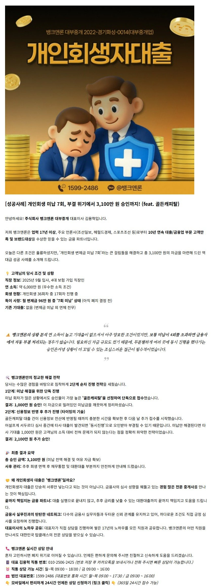
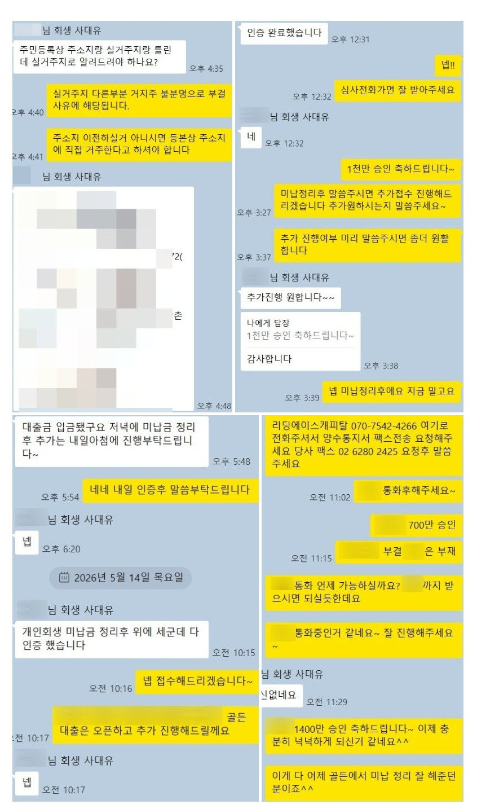
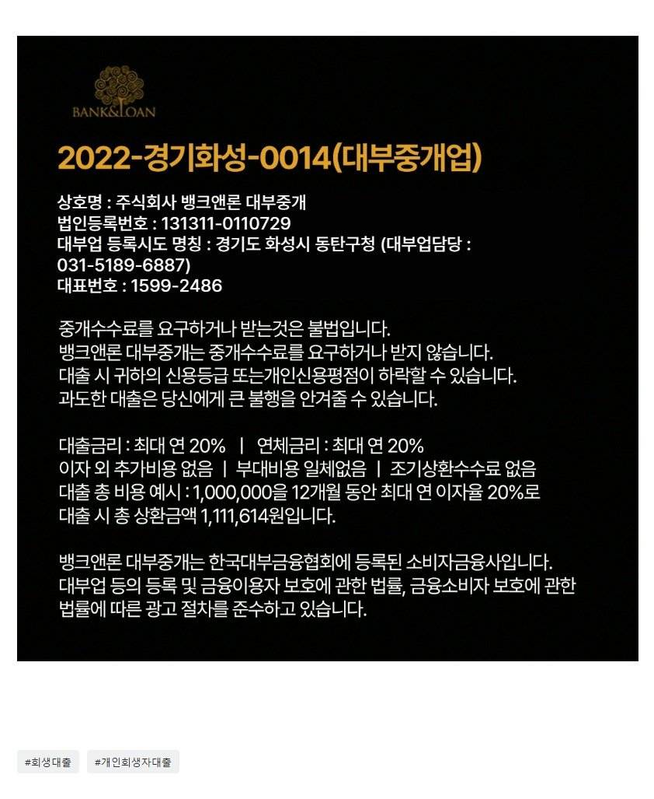

[회생대출] 개인회생 미납 7회, 부결 위기에서 3,100만 원 승인까지! (feat. 골든캐피탈)

https://www.banknloan.kr/대출상품/개인회생자대출
원본 백업에 없거나 외부 접근이 제한된 이미지입니다.
주식회사 뱅크앤론 대부중개 - 개인회생자 대출
주식회사 뱅크앤론 대부중개 설명
www.banknloan.kr
? 카톡 채널 실시간 상담 https://pf.kakao.com/_pxeDsM

https://www.youtube.com/watch?v=LRnWjLIl4qg

https://cafe.naver.com/cityman88/311394